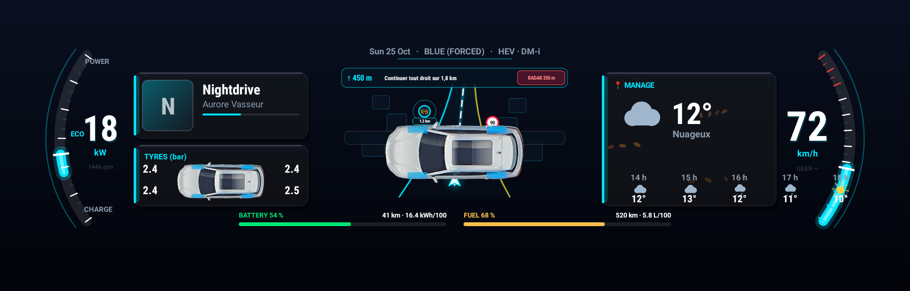
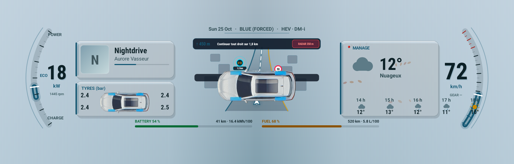

V E K T R A
Le combiné de ta BYD, à ta façon.
Aperçu
VEKTRA remplace l'affichage d'origine du combiné, derrière le volant, par un tableau de bord à soi.

De gauche à droite : la date, le compteur à aiguille gradué jusqu'à 220 km/h, la musique en cours quelle que soit l'application qui la joue, trois chiffres choisis selon le mode, la ligne de flux d'énergie dont le point central part vers la droite en rouge quand la batterie se décharge et vers la gauche en vert quand elle se recharge, puis la météo animée et la pression des quatre pneus en bar.

En Sport, l'ambiance passe au rouge, une pastille SPORT apparaît et les trois chiffres du bas changent : puissance, régime moteur et position de l'accélérateur, à la place des consommations et de la batterie.
Les captures de cette page sont dessinées par le code de la version publiée à chaque publication, avec des valeurs de démonstration. Elles ne peuvent donc pas montrer une version plus ancienne que celle proposée ici.
Huit thèmes
La touche Thème fait défiler huit dispositions du combiné : Carbone, Carbone 3D, Grand Tourisme, Flux d'énergie, Obsidienne, Rouge Sport, Lumen et Nébuleuse. Un appui passe à la suivante. Le choix est retenu et revient à l'allumage.


Chaque thème existe en sombre et en clair. Le fond clair reprend le bleu-gris de la surcouche BYD, mesuré sur photo, pour que l'application se fonde dedans au lieu d'y être posée. Le réglage Apparence choisit l'un, l'autre, ou suit la tablette.
Ce qu'il faut
- Un véhicule BYD équipé de DiLink 3 (Android 10). Mis au point sur une Seal U DM-i ; les autres modèles DiLink 3 n'ont pas été vérifiés.
- La tablette doit accepter l'installation d'applications extérieures (sideload).
- Le débogage ADB en réseau actif sur la tablette, port 5555. VEKTRA s'y connecte en local, sur la tablette elle-même — rien ne sort du véhicule.
- Une connexion internet sur la tablette pour la météo et les mises à jour. Tout le reste fonctionne hors ligne.
Pourquoi l'ADB. Les commandes qui libèrent l'écran du combiné ne sont autorisées qu'à l'utilisateur shell d'Android. Une application ordinaire ne peut pas les envoyer. VEKTRA passe donc par l'ADB de la tablette, en local, pour obtenir ce droit.
Installation
- Télécharge le fichier de l'application depuis cette page, sur la tablette.
- Ouvre-le et accepte l'installation. Si Android refuse, autorise les « sources inconnues » pour le gestionnaire de fichiers utilisé.
- Ouvre VEKTRA. Au tout premier démarrage, l'écran d'accueil demande la langue.
- Appuie sur Continuer. L'écran principal s'ouvre.
- La première commande envoyée fera apparaître la demande « Autoriser le débogage USB ? ». Coche Toujours autoriser, puis accepte. Cette demande n'apparaît qu'une fois.

Six langues sont disponibles : français, anglais, italien, allemand, portugais du Brésil et turc.
Activer l'affichage

- Dans la section Contrôle, appuie sur Vérifier · ADB et diagnostic. C'est ce qui déclenche l'autorisation de débogage et confirme que la connexion fonctionne.
- Reviens sur Combiné et appuie sur Afficher sur le combiné.
- Le tableau de bord d'origine se met en veille, l'écran virtuel du combiné est créé, puis VEKTRA s'y affiche. L'opération prend une dizaine de secondes.
- L'aperçu au centre de la tablette montre en direct ce qui est dessiné derrière le volant. Le bouton Aperçu le replie si tu préfères un tableau d'état.
Pour revenir en arrière, appuie sur Revenir à l'origine : le tableau de bord BYD reprend la main. Si jamais il ne revient pas, coupe puis remets le contact.
Les autres touches
- Écran — choisit ce qui s'affiche sur le combiné : tableau de bord, données brutes ou calibration.
- Mode — laisse la voiture décider (Sport est détecté tout seul) ou force une ambiance pour un essai à l'arrêt.
- Thème — passe au thème suivant à chaque appui, parmi les huit disponibles.
Les quatre sections
Le rail de gauche donne accès à quatre pages. Les quatre témoins du bas — ADB, combiné, musique, démarrage automatique — passent au vert dès que la fonction correspondante est en place.
Contrôle

Cette page relève tout : les appareils du SDK de la voiture et les valeurs qu'ils renvoient, l'état de l'ADB, l'accès à la musique, l'alimentation du véhicule, la météo, la version installée et la source des mises à jour. Le bouton Copier tout le scan, en haut à droite, met l'ensemble dans le presse-papiers — c'est ce qu'il faut envoyer en cas de problème.
Les touches du bas lancent les essais : diagnostic ADB, lecture des données de la voiture, et autorisation de l'accès à la musique.
Journal

Chaque commande envoyée et chaque réponse reçue y sont écrites, dans l'ordre. Le bouton Copier le journal fait de même pour le texte entier.
Réglages

Musique
Pour afficher le morceau en cours, VEKTRA a besoin de l'accès aux notifications : c'est la règle d'Android pour lire les sessions audio. Appuie sur la ligne Accès aux notifications et l'application se l'accorde elle-même par l'ADB, sans rien effacer de la liste existante. Une fois accordé, le titre, l'artiste, la pochette et la progression s'affichent, quelle que soit l'application qui joue — radio, Bluetooth, ou une app installée.
Démarrage et arrêt automatiques
Quand ce réglage est actif, VEKTRA prend le combiné dès que la voiture est allumée et le rend dès qu'elle est coupée. L'état du véhicule est lu directement dans la voiture, une fois par seconde : 0 éteint, 1 accessoires, 2 contact mis. Une coupure doit être confirmée deux fois d'affilée avant que l'écran soit rendu — un seul hoquet de la voiture ne doit pas faire disparaître l'affichage en pleine route.
Apparence
Sombre, claire, ou automatique — l'apparence suit alors celle de la tablette. Le réglage ne concerne que le combiné : l'écran de la tablette reste sombre en toutes circonstances, c'est un poste de pilotage.
Source des mises à jour
L'adresse de la fiche de version. Elle se change sans recompiler : n'importe quel hébergement servant un fichier texte sans mot de passe convient. Par défaut, c'est cette page.
Mise à jour
VEKTRA vérifie toute seule à chaque ouverture. Quand une version est disponible, une fenêtre affiche les nouveautés et propose Plus tard ou Télécharger et installer. Si tu acceptes, l'application se télécharge, s'installe par-dessus et se rouvre seule.
Toutes les versions portent la même signature : une mise à jour remplace toujours la précédente sans qu'Android la refuse, et sans perdre les réglages.
En cas de souci
- Le combiné reste figé. Appuie sur Revenir à l'origine, puis réessaie. Si rien ne change, coupe et remets le contact.
- Aucune donnée, que des tirets. Le SDK de la voiture n'a pas répondu. La section Contrôle dit lesquels des appareils sont joignables.
- La musique ne s'affiche pas. L'accès aux notifications n'est pas accordé : voir plus haut. Vérifie aussi que quelque chose joue réellement.
- La mise à jour dit « Indisponible ». La tablette n'a pas joint la source. Vérifie sa connexion internet, puis réessaie : la raison exacte s'affiche.
- Autre chose. Ouvre Contrôle, appuie sur Copier tout le scan, puis envoie le texte. Il contient tout ce qu'il faut pour comprendre.
Nouveautés de la 1.8.1
- Theme Store : nouvelle section dans le menu de gauche, ouverte aussi par la touche « Thème ». Carbone 3D reste le thème intégré par défaut ; le thème Aston se télécharge en un geste, avec aperçu, taille, progression, Appliquer, Mettre à jour et Supprimer. Chaque thème est vérifié (signature Vektra) avant d'être installé ; un fichier .vektra reçu autrement s'installe aussi par « Importer thème ». Les prochains thèmes arriveront par le même chemin.
- Carte Vektra 3D : une carte fluide dessinée directement par la tablette, avec bâtiments en 3D, qui suit la voiture en continu. C'est maintenant la carte de tous les écrans : onglet « Navigation », widget Navigation de Carbone 3D, thème Aston et carte plein combiné ; la flèche reste sur la route où l'on roule et la ligne bleue part de la flèche (la partie déjà parcourue disparaît). Nouvelle section « Carte » dans les Réglages : style, bâtiments 3D et zoom.
- Thème Aston (dans le Theme Store) : deux compteurs, rapport P R N D, témoins, et au centre la musique, la météo ou la carte ; une navigation lancée depuis la tablette est reprise sur le combiné (prochaine direction, distance, temps restant, heure d'arrivée, radars réels).
- Navigation : le guidage suit maintenant la voiture le long de l'itinéraire. La prochaine direction avance au fil du trajet, la distance et le temps restants sont mesurés sur l'itinéraire, chaque manœuvre est annoncée et l'arrivée est signalée. L'itinéraire est recalculé automatiquement quand on sort du trajet ou qu'on le prend à contresens, dans le sens où roule la voiture. La carte ne ralentit plus à chaque position GPS.
- Plus aucune valeur inventée : sans donnée de la voiture, les écrans affichent « -- » au lieu d'une vitesse, d'une batterie, d'une pression de pneus, d'une limitation ou d'un morceau de démonstration ; plus de faux radars ajoutés sur l'itinéraire ni annoncés à voix haute ; le rapport M ou S n'est plus affiché « D ».
- Import de widgets et de thèmes : lecture en arrière-plan (un gros fichier ne fige plus l'écran), taille limitée, image réduite à la taille du combiné ; formats réellement pris en charge indiqués (images, widget Vektra .json, disposition .json, .zip, .vektra) ; un widget KWGT, SVG, HTML ou XML est refusé avec une explication au lieu d'être accepté sans effet.
- Édition : un widget masqué ou non importé ne capte plus les touchers, le grand widget Navigation ne garde plus la sélection, le zoom général n'est plus appliqué deux fois aux bords de la carte, et l'aperçu de la tablette n'a plus de trou à la place de la carte.
- Interface : toutes les fenêtres (voix, langue des voix, import, variables, source des mises à jour, don) et tous les messages sont au style de l'app ; le clavier s'ouvre bien sur le champ d'adresse.
- Affichage sur le combiné : l'affichage complet de VEKTRA revient tout seul sur le combiné quand le lancement automatique relance l'application (il pouvait rester éteint), et la carte ne disparaît plus après un redémarrage ; VektraUI s'affiche proprement, sans élément de Carbone 3D par-dessus.
Télécharger
Dernière version publiée, prête à installer sur la tablette.
VEKTRA 1.8.1 — télécharger l'application